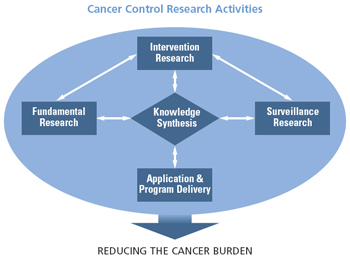

Cancer Control Framework and Synthesis Rationale
In 1997, the Division of Cancer Control and Population Sciences was established to enhance NCI’s ability to alleviate the burden of cancer through research in epidemiology, behavioral sciences, health services, surveillance, and cancer survivorship. Cancer control research aims to generate basic knowledge about how to monitor and change individual and collective behavior, and to ensure that knowledge is translated into practice and policy rapidly, effectively, and efficiently.
Cancer Control Definition
Cancer control science is the conduct of basic and applied research in the behavioral, social, and population sciences to create or enhance interventions that, independently or in combination with biomedical approaches, reduce cancer risk, incidence, morbidity and mortality, and improve quality of life (Cancer Control Program Review Group, 1998—modified).
Cancer Control Research Activities
The dynamic and interdisciplinary nature of the division’s activities is illustrated in the cancer control framework. This framework illustrates three categories into which all cancer control activities can be assigned, and the central role of knowledge synthesis. All research areas act through application and program delivery to reduce the cancer burden, with a strong commitment to dissemination and diffusion, and collaborations that facilitate the application and program delivery of evidence-based approaches to cancer control.
This diagram illustrates the synthesis of fundamental research, intervention research, and surveillance research with application and program delivery to reduce the burden of cancer.
Adapted from the 1994 Advisory Committee on Cancer Control, National Cancer Institute of Canada